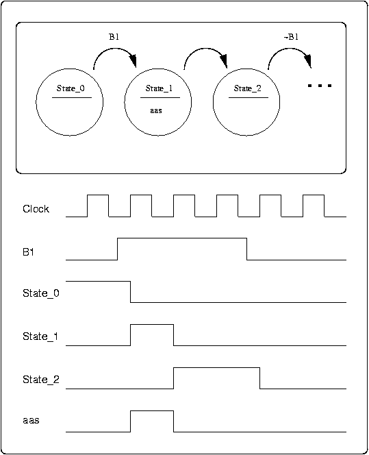
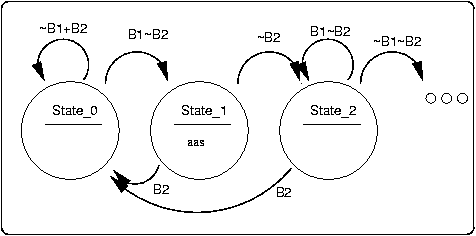
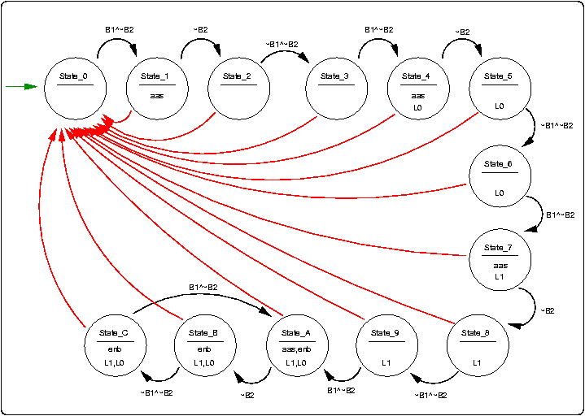
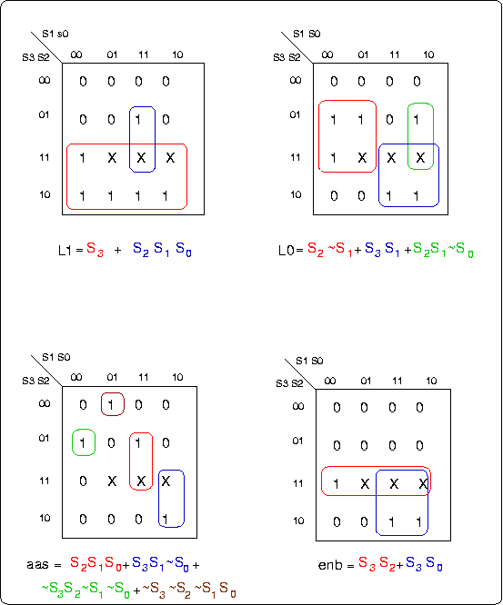
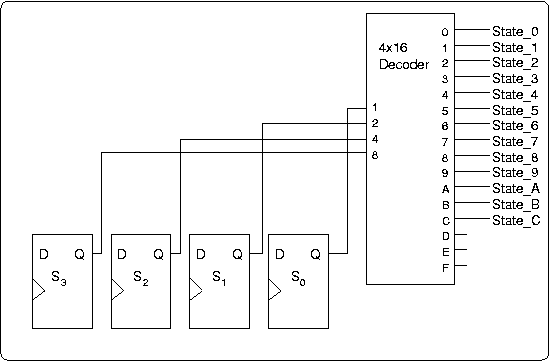

This web page adheres to current standards for HTML and CSS. You can check that by clicking on the links below. Unfortunately, certain browsers, which shall remain nameless except to point out that they have the initials "ie," don't handle style sheets properly. The solution, if this page looks funny, is to get a browser that does handle style sheets correctly. I understand that this includes the Safari browser for Macintosh. It also includes the Firefox browser from mozilla.org.
As a review of state machine design for the first exam, we are implementing the design of a controller for a datapath. The problem is based on an exercise that CS-345 students are doing this semester using actual hardware. For this web page, I've modified the problem a little compared to how it was presented in class.
The datapath consists of an arithmetic unit that can compute the sum of some numbers (it's not specified where the numbers come from), and push the sum into a 4-stage queue. As sums exit the queue, they are displayed on a pair of seven segment displays. Here's a rough diagram of the datapath:

Figure 1. The datapath to be controlled.
There are two signals that control the datapath: "add-and-shift" (aas) and "enable-displays" (enb). When aas is true, the datapath computes a new sum and shifts it into the queue. When enb is true, the seven-segment displays show the value of the current value coming out of the queue; otherwise they are dark.
There are two pushbuttons that control the operations of the datapath, B1 and B2. When B1 is pressed, the datapath does a single add-and-shift regardless of how long the button is pressed. B1 has to be released and pressed again to cause another add-and-shift operation to take place. The seven-segment displays remain dark until the queue has filled up. That is, until B1 has been pressed four or more times. Pressing B2 resets the device so that the displays go dark until the user presses B1 four more times. Pressing B2 should reset the summing circuit too, but that is not part of our design. (The datapath could be designed to reset the sum to zero when it is told to turn off the displays.)
The controller also has two LEDs (light emitting diodes) it can turn on or off, L1 and L0. The two LEDs indicate, in binary, which stages in the queue are currently occupied: When the LEDs are 002, it means that either the queue is empty, or that only stage 0 is occupied with a sum. When the LEDs are 012, stages 0 and 1 both contain sums. 102 means stages 0, 1, and 2 all contain valid sums, and 112 means that all four stages (0, 1, 2, and 3) contain valid sums. The controller makes enb true so that the seven-segment displays light up only when stage 3 contains a valid sum.
Here is a diagram showing the inputs and outputs of the controller:

Figure 2. Controller inputs and outputs.
Remember, we are designing just the controller, not the datapath for this device. So everything from here on has to do only with the design of the finite state machine (FSM) that acts as the Controller in Figure 2.
As Figure 2 indicates, the controller has two external inputs, B1 and B2, and four external outputs, L1, L0, enb, and aas. Before constructing the state table, we need to figure out how many states there will be. In this particular example, there is a sequence of states, much like the counter examples we did before. There have to be three states for each B1 press: one when B1 is pressed, a second while waiting for the button to be released, and a third while waiting for B1 to be pressed again. Figure 3 shows how three states would be used to detect a press and release of B1, with the middle state used to generate a true value for aas for exactly one clock cycle no matter how long B1 is held.
Figure 3. Three states used to detect the rising edge of B1 and to assert the aas output for exactly one clock period regardless of how long B1 remains true. During State_0 the machine is waiting for B1 to go true. When it does, the machine goes into State_1 for exactly one clock period, during which it asserts aas. The machine then goes into State_2 where it waits for B1 to go false. When B1 goes false, the machine goes to another state, where it waits for B1 to go true again. (The next state after State_2 would be State_0 if this was the entire controller.) The timing diagram below the state diagram shows the relationships between the inputs (Clock and B1), three signals that indicate the present state, and the value of the aas output.
The timing diagram in Figure 3 is especially important to understand because it shows how state transitions always happen at the edge of a clock pulse. We'll come back to the signals marked with the state names (State_0, State_1, State_2, ...) after we know how many different states our controller will need. The following table gives a verbal summary of each state:
| Description | Outputs |
|---|---|
| Initial state, waiting for first B1 press. Return here any time B2 is pressed. | All off. |
| B1 pressed: Stay here for one clock pulse. | Assert aas, filling Stage 0 of the queue. Both LEDs off. |
| Wait for B1 to be released. | All off. |
| Wait for B1 to be pressed a second time. | All off. |
| B1 pressed: Stay here for one clock pulse. | Assert aas, filling Stage 1 of the queue. Assert L0. |
| Wait for B1 to be released. | Continue asserting L0. |
| B1 released: Wait for B1 to be pressed a third time. | Continue asserting L0. |
| B1 pressed: Stay here for one clock pulse. | Assert aas, filling Stage 2 of the queue. Assert L1, but not L0. |
| Wait for B1 to be released. | Continue asserting L1. |
| B1 released: Wait for B1 to be pressed a fourth time. | Continue asserting L1. |
| B1 pressed: Stay here for one clock pulse. | Assert aas, filling Stage 3 of the queue. Assert both L1 and L0 as well as enb. |
| Wait for B1 to be released. | Continue asserting L1, L0, and enb. |
| B1 released: Wait for B1 to be pressed again. | Continue asserting L1, L0, and enb. |
The bottom three states repeat every time B1 is pressed again. Counting the rows, we see that we need 13 states. (Not the 16 states I said would be used in class on 9/23.) For anywhere between 9 and 16 states, we need four "state flip-flops" to hold the encoded state. We'll call these four flip-flops S3, S2, S1, and S0, and we'll name our states State_0, State_1, ... State_C, where the hexadecimal digit at the end of each state name matches the binary value represented by the settings of the four state flip-flops in that state. At the end of this web page there is a section on "one-hot encoding" that can be easier to implement than the design being developed here. But for now, we'll use four flip-flops to represent which of the thirteen states is active at any time.
When designing a state machine, you have to be sure to account for all input possibilities when showing the transition arcs. In this exercise, there are two input buttons, so we have to account for 22 = 4 possibilities: ~B1^~B2, ~B1^B2, B1^~B2, and B1^B2. (I'm using '~' for NOT, '+' for OR, and '^' for AND.)
Figure 4. Three states with all arcs explicit.
Figure 4 shows the same three states as Figure 3, but with all arcs drawn in and labeled. The design says that pressing B2 at any point resets the controller, no matter whether B1 is pressed or not. In our design, State_0 will be the state that the FSM returns to when B2 is pressed. Start by noticing that both State_1 and State_2 have an arc back to State_0 marked "B2" to meet this design requirement. In the full state diagram below (Figure 5), these arcs are drawn in red and not labeled to help reduce the clutter of the diagram.
Looking at State_0 in Fig. 4, you can see two arcs coming out of it, one labeled ~B1+B2 and the other B1~B2. In English, they say to return to State_0 on every clock pulse if B1 is not pressed or if B2 is pressed, and to go to State_1 if B1 is pressed and B2 is not pressed. By DeMorgan's Law, ~B1+B2 is ~(B1^~B2), so the two arcs together specify ~(B1^~B2)+(B1^~B2). Since ~x+x = 1, the two arcs cover all four possible combinations of values for B1 and B2.
For State_1, there are again two arcs exiting from the state, one labeled B2 and the other labelled ~B2, so again all four possible combinations of values for B1 and B2 are covered. (In this case, the value of B1 doesn't matter.) And for State_2, there are three arcs: B2, B1^~B2, and ~B1^~B2. Since B2 alone covers both B1^B2 and ~B1^B2, all four combinations are again covered.
We will adopt a common convention for our state diagrams: We won't draw the arc that loops back into a state (if one exists). However, if the arcs that exit a state don't cover all possible combinations of input variables, such an arcs is implied to exist and will be used by the FSM whenever one of the unspecified input combinations happens. (A common variation on this convention is to draw the loopback arc and to label it "else," but we'll just not draw it at all.)
So, with all that background in place, here is the state diagram for our controller:
Figure 5. State diagram for the controller. The green arrow going into State_0 represents an initial transition that we assume occurs automatically when power is applied to the FSM. The red arcs should all be marked "B1", but those labels are omitted to reduce clutter. Wherever the outgoing arcs from a state do not account for all four possible combinations of values for the two input variables B1 and B2, there is an implcit feedback loop into the state that is taken for all the missing combinations. For this diagram, such feedback arcs would apply for all states except 1, 4, 7, and A.
This leads to a complete state table with the following headings:
| Inputs | Present State | Next State | Outputs | ||||||||||
|---|---|---|---|---|---|---|---|---|---|---|---|---|---|
| B2 | B1 | S3 | S2 | S1 | S0 | S3 | S2 | S1 | S0 | L1 | L0 | aas | enb |
Unfortunately, there are six variables on the input side (B1, B2, and the four state flip-flops), which means the full table will have 26 = 64 rows, which we can't reasonably expect to fill in manually, to say nothing of minimizing the next state and output functions. You should be able to do it if you had to, but it would be too big a chore to be a worthwhile way to spend one's time.
We start by taking advantage of the fact that we always design Moore Machines in this course. That is, the outputs depend only on the present state, which means we can ignore B1 and B2 when determining the values of L1, L0, aas, and enb. That reduces the number of inputs to 4, giving us a 16-row table to work with:
| Present State | Outputs | ||||||
|---|---|---|---|---|---|---|---|
| S3 | S2 | S1 | S0 | L1 | L0 | aas | enb |
| 0 | 0 | 0 | 0 | 0 | 0 | 0 | 0 |
| 0 | 0 | 0 | 1 | 0 | 0 | 1 | 0 |
| 0 | 0 | 1 | 0 | 0 | 0 | 0 | 0 |
| 0 | 0 | 1 | 1 | 0 | 0 | 0 | 0 |
| 0 | 1 | 0 | 0 | 0 | 1 | 1 | 0 |
| 0 | 1 | 0 | 1 | 0 | 1 | 0 | 0 |
| 0 | 1 | 1 | 0 | 0 | 1 | 0 | 0 |
| 0 | 1 | 1 | 1 | 1 | 0 | 1 | 0 |
| 1 | 0 | 0 | 0 | 1 | 0 | 0 | 0 |
| 1 | 0 | 0 | 1 | 1 | 0 | 0 | 0 |
| 1 | 0 | 1 | 0 | 1 | 1 | 1 | 1 |
| 1 | 0 | 1 | 1 | 1 | 1 | 0 | 1 |
| 1 | 1 | 0 | 0 | 1 | 1 | 0 | 1 |
| 1 | 1 | 0 | 1 | X | X | X | X |
| 1 | 1 | 1 | 0 | X | X | X | X |
| 1 | 1 | 1 | 1 | X | X | X | X |
The bottom three rows of this truth table have X's for the output variable values. That's because the controller never actually enters any of these states, so we indicate that we don't care what the values are for those combinations of inputs. The X's are entered into the Karnaugh Maps, just like the 1's and 0's in the other rows. Where they occur, they may be included in a circle (treated as 1's) if that helps make the circle larger, thus helping the minimization. But they don't have to be included in any circle (treated as 0's) if that helps the minimization by eliminating extra circles. Remember, each circle in a Karnaugh map corresponds to an AND gate in the final circuit. The larger the circle (the more squares included), the smaller the number of inputs to the corresponding AND gate. And, of course, the fewer circles there are, the fewer the number of AND gates needed.
Figure 6. Karnaugh maps and minimized functions for the four output variables.
Figure 6 gives the Karnaugh maps for the four output variables, derived from Table 1. The terms in the equations are color-coded to match the circles in the maps.
Rather than wrestle with the full 64-row truth table for generating the next state values that will connect to the D inputs of the four flip=flops, we will use a 4x16 decoder to generate a separate signal for each state. Three of the decoder outputs are unused, as shown in Figure 7.
Figure 7. Decoding the state flip-flops to produce individual signal wires for all the states.
The next step is to note all those states for which each state flip-flop is true. For example, S0 is true in all the odd-numbered states (State_1, State_3, State_5, etc.). Likewise, S1 is true in states State_2, State_3, State_6, State_7, etc.; S2 is true in states State_4, State_5, State_6, State_7, etc.; S3 is true in states State_8, State_9, State_A, State_B, and State_C. If this isn't clear, just write out the four bit binary numbers from 00002 through 11002 and observe which flip-flops are ones for each row.
Now we can generate the next state equations for the four state flip-flops by examining Figure 5 and pretty much reading off the values. For S0 we look at all the arcs going into the odd-numbered states. remembering to include those feedback loops that aren't shown in Figure 5. AND together the state each arc comes from along with the label on the arc, then OR all the AND terms together.
The process of actually grinding the equations out is very tedious, but we can start the process to see what it looks like. For example, to generate the D input for S0 we would look at all the odd numbered states in Figure 5:
There will be some algebraic minimizations that can be done by hand, but the message is clear: The next state logic for this controller is a big piece of work! But the procedure should make some sense to you.
The design approach above is intuitively appealing. The number of flip-flops is minimal: ceil( log2(N) ) for N states. The output logic is easy to generate, and the overhead of putting in a decoder to help generate the next state values actually gets "folded into" an actual design when software tools are used to generate the combinational logic. And the relationships among the state diagram and the state table are straight-forward.
There is an alternate approach that is often used, called "one hot encoding." In this approach, there is a separate flip-flop for each state (13 instead of 4 for the controller we're using for our example). It's called "one hot" because the controller has to be built so that exactly one flip-flop is true ("hot") at a time. With the encoded design and a decoder it's automatic that exactly one of the State_x signals will be true at a time. With a one hot design, once the bugs are out, the same thing will be true.
The disadvantage of the one hot approach is that now we have to come up with 13 equations for flip-flop inputs instead of just 4. The advantage is that these equations are much simpler:
State_0 = B2 + State_0^~B1
State_1 = B1^~B2^State_0
State_2 = ~B2(State_1 + State_2^B1)
State_3 = ~B1^~B2(State_2 + State_3)
State_4 = B1^~B2^State_3
. . .
State_C = ~B1^~B2(State_B + State_C)
The above equations are specific to the particular example we are working on, but it will generally be the case that this design trades off a larger number of equations for the relative simplicity of each one.
Likewise, the output functions become simple. They are just the sums (ORs) of states in which each one is true:
L0 = State_4 + State_5 + State_6 + State_A + State_B + State_C
L1 = State_7 + State_8 + State_9 + State_A + State_B + State_C
aas = State_1 + State_4 + State_7 + State_A
enb = State_A + State_B + State_C
If we were doing Mealy machine design, these equations would have B1 and B2 literals in them as well. But we aren't, so we don't, and we're done!
Which design approach should you use? For this course the answer is "always use the encoded approach." You will be tested on your ability to lay out the columns of the state table properly and to generate the next state and output functions, at least in principle, based on this design approach.
But in the real world, if you were designing a state machine by hand, you'd probably use the one-hot approach. And if you used a high-level tool such as a hardware description language (HDL) like Verilog or VHDL you would have tools available that would help you produce a good one hot design. And if you use a hardware implmentation language (HIL) like Handel-C, the compiler will generate all your state machines for you!
Here is what a Handel-C program would look like for our controller. Handel-C looks a lot like C or Java. But when you declare variables, you have to tell how many bits they use. And all the statements inside a par block get executed simultaneously.
This code compiles, but doesn't really run because there is no mechanism here to change the values of B1 and B2. But it gives you an example of a "program" that can be compiled into the gates and flip-flops of a state machine.
// controller.hcc
// Outputs (1 is the number of bits)
unsigned 1 L0, L1, enb, aas;
// Inputs
unsigned 1 B1, B2;
set clock = external;
// Execution starts here
// ----------------------------------------
void main( void )
{
unsigned 2 numStages;
// Initialize
par
{
L0 = 0;
L1 = 0;
enb = 0;
aas = 0;
numStages = 0;
}
/* In a real program the B1 and B2 inputs would
* be connected to switches, L1 and L0 would be
* connected to LEDs, and the datapath would
* monitor the status of enb and aas;
*/
par
{
// Endless loop for B1
while (1)
{
// Wait for B1 to be pressed
while ( B1 == 0 )
delay;
// B1 pressed
if ( !B2 )
{
par
{
// Count stages and update outputs
// to datapath.
if ( numStages < 3 )
numStages++;
else
delay;
aas = 1;
if ( numStages == 3 )
enb = 1;
else
enb = 0;
}
}
else
delay;
// Show number of stages in the LEDs
par
{
L1 = numStages[1]; // msb to L1
L0 = numStages[0]; // lsb to L0
}
// Wait for B1 to be released
while ( B1 == 1 )
delay;
}
// Endless loop for B2
while (1)
{
if ( B2 == 1 )
{
// Re-initialize everything.
par
{
numStages = 0;
enb = 0;
aas = 0;
}
}
else
delay;
}
}
}